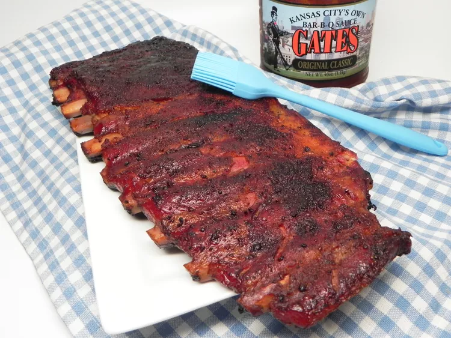

Larry's Smoked BBQ Spare Ribs

Description
Slow-smoked BBQ ribs.
Ingredients
- ½ cup paprika
- 2 tablespoons light brown sugar
- 2 tablespoons garlic powder
- 1 tablespoon salt
- 1 tablespoon ground black pepper
- 3 racks pork spareribs
- 3 cups apple juice (Optional)
- 3 cups barbeque sauce
Steps
- Prepare an indirect fire with charcoal in a smoker or grill, according to manufacturer's instructions. Once the coals get going, add wood chips. Maintain a temperature of 230 to 260 degrees F (110 to 127 degrees F).
- Meanwhile, mix paprika, brown sugar, garlic powder, salt, and pepper together in a bowl until well combined. Spread rub all over ribs, making sure not to miss any spots.
- Place ribs on the preheated smoker or grill on the opposite side of the fire. Cover and smoke ribs, adding wood chips as needed to maintain temperature, until rub has set and looks dry, 1 to 2 hours. Baste with apple juice and continue to cook, basting every 30 minutes, for 2 1/2 to 3 1/2 hours more.
- Brush BBQ sauce on both sides of the ribs, and cook for 15 minutes. Brush again, and cook until meat pulls away easily from the bone, 10 to 15 minutes longer. An instant-read thermometer inserted into the center should read 145 degrees F (63 degrees C).